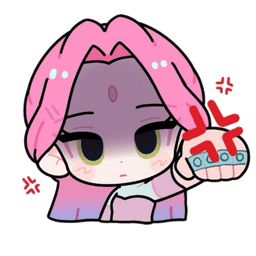

¿Quién es Mizi?
Mizi es una de las protagonistas de Alien Stage, la popular serie animada creada por VIVINOS. Es una joven de personalidad amable, optimista y cariñosa, reconocida por su increíble talento para el canto y por el profundo vínculo emocional que comparte con Sua. Su historia es una de las más conmovedoras de la serie y ha conquistado a miles de seguidores alrededor del mundo.
📋 Información básica
- Nombre: Mizi
- Serie: Alien Stage
- Creador: VIVINOS
- Personalidad: Alegre, amable y decidida.
- Habilidad: Canto.
- Color representativo: Rosa.
✨ Curiosidades
Mizi es uno de los personajes más queridos por los fans gracias a su actitud positiva y su enorme fortaleza emocional. Su relación con Sua representa uno de los momentos más importantes de Alien Stage, convirtiéndose en uno de los temas más comentados dentro de la comunidad.